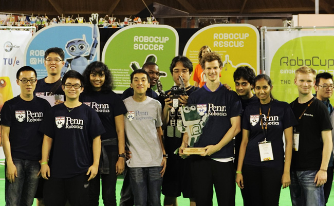
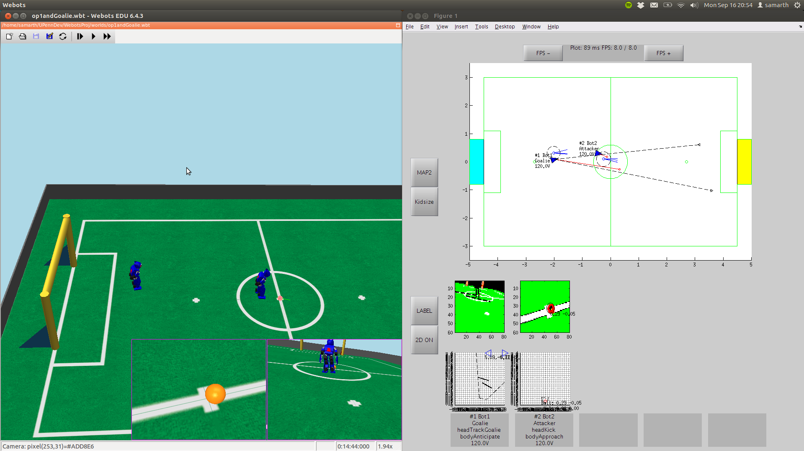
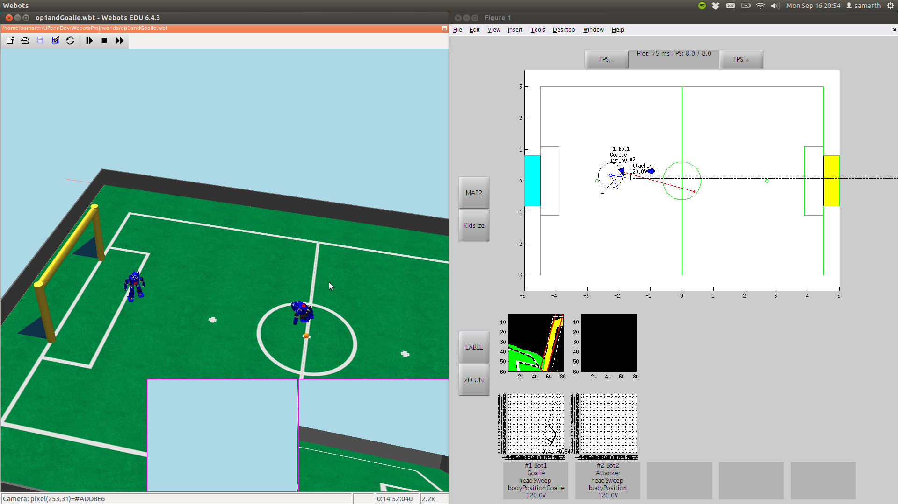
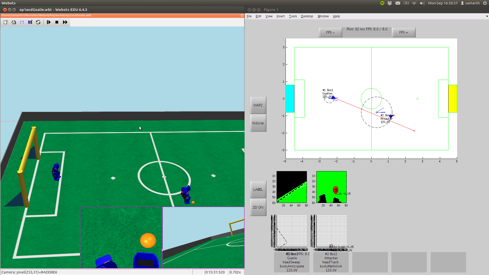

University of Pennsylvania's RoboCup Humanoid Kid Size Team has been winning the international championships for three years in a row now. I joined the team in January 2013.
Senior team members Steve, SJ, Yida, Larry and Aditya provided us newcomers with an excellent tutorial series and introduced us to the immense code-base. As we got more comfortable we were assigned with specialized tasks, because there were a lot of new challenges in the 2013 edition of the competition. The RoboCup Federation, to further its intention of developing a robotic soccer team capable of competing and winning against an international human team by 2050, introduced the following changes in rules:
This meant that robot localization was not quite difficult - if a robot fell down near the center of the field and got up, it would often be confused about its orientation (because the field now looked the same on both sides) and hence try to score own goals.
I was assigned the task of improving the particle-filter based localizing algorithm under guidance by SJ. We came up with a strategy in which the goal-keeper's ball estimate (which was relatively stable because it did not fall down too often) was used to disambiguate the orientation of a robot that fell down near the center of the field. This strategy came in handy quite a few times during the competition.
We ran a lot of simulation matches using the Webots software to develop and perfect the strategy:



During the tournament I was also reponsible for making colortables, which are the look-up tables for color-based segmentation that we generate using our excellent color learning tool that uses Gaussian Mixture Models to classify colors into field, goalpos, ball, field lines etc.